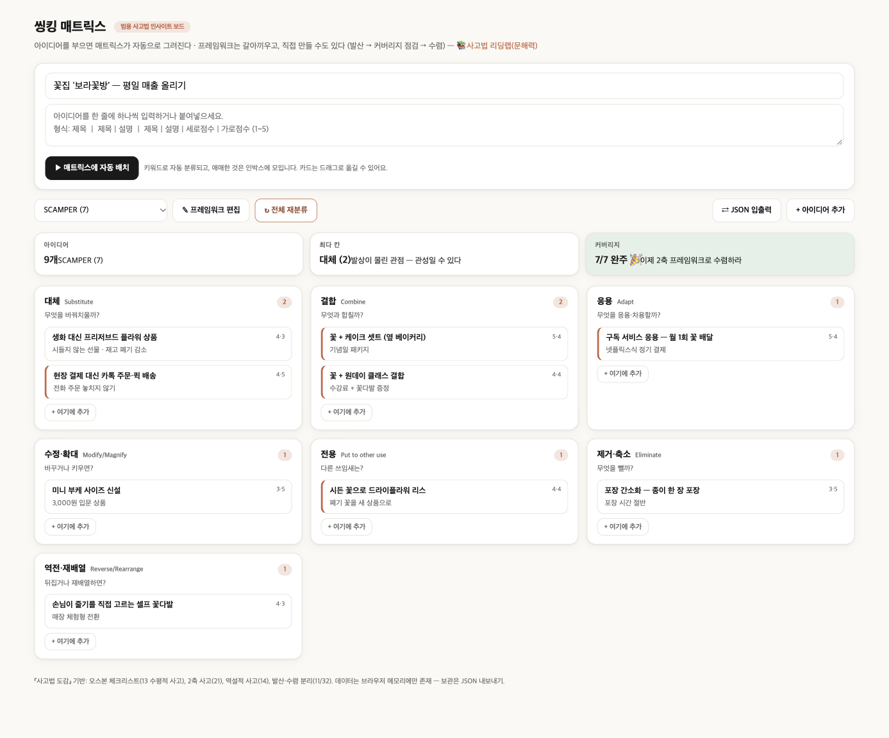

가상 사례 · 🛍️ 소매·생활
🌷 ‘보라꽃방’ 꽃집
목표: 평일 매출 올리기 — SCAMPER 7가지 질문으로 아이디어 9개를 정리했습니다.
핵심 3가지
S 대체 현장 결제 대신 카톡 주문·퀵 배송 → 전화를 못 받아 놓치던 주문 회수
A 응용 넷플릭스식 월 구독 꽃 배달 → 평일에도 고정 매출
P 전용 시든 꽃 → 드라이플라워 리스 → 폐기 비용이 신상품으로
완성 보드

렌즈별 아이디어
효과·실현성은 1~5점의 예시 점수입니다. ⭐는 둘 다 4점 이상 — “우선 실행” 후보.
대체Substitute2
무엇을 바꿔치울까?
-
생화 대신 프리저브드 플라워 상품시들지 않는 선물 · 재고 폐기 감소효과 4 · 실현 3
-
현장 결제 대신 카톡 주문·퀵 배송전화 주문 놓치지 않기⭐ 효과 4 · 실현 5
결합Combine2
무엇과 합칠까?
-
꽃 + 케이크 셋트 (옆 베이커리)기념일 패키지⭐ 효과 5 · 실현 4
-
꽃 + 원데이 클래스 결합수강료 + 꽃다발 증정⭐ 효과 4 · 실현 4
응용Adapt1
무엇을 응용·차용할까?
-
구독 서비스 응용 — 월 1회 꽃 배달넷플릭스식 정기 결제⭐ 효과 5 · 실현 4
수정·확대Modify/Magnify1
바꾸거나 키우면?
-
미니 부케 사이즈 신설3,000원 입문 상품효과 3 · 실현 5
전용Put to other use1
다른 쓰임새는?
-
시든 꽃으로 드라이플라워 리스폐기 꽃을 새 상품으로⭐ 효과 4 · 실현 4
제거·축소Eliminate1
무엇을 뺄까?
-
포장 간소화 — 종이 한 장 포장포장 시간 절반효과 3 · 실현 5
역전·재배열Reverse/Rearrange1
뒤집거나 재배열하면?
-
손님이 줄기를 직접 고르는 셀프 꽃다발매장 체험형 전환효과 4 · 실현 3
먼저 시작하기 좋은 것 (5개)
- 대체 현장 결제 대신 카톡 주문·퀵 배송 — 전화 주문 놓치지 않기
- 결합 꽃 + 케이크 셋트 (옆 베이커리) — 기념일 패키지
- 결합 꽃 + 원데이 클래스 결합 — 수강료 + 꽃다발 증정
- 응용 구독 서비스 응용 — 월 1회 꽃 배달 — 넷플릭스식 정기 결제
- 전용 시든 꽃으로 드라이플라워 리스 — 폐기 꽃을 새 상품으로
내 가게로 바꿔서 해보기
- 씽킹 매트릭스를 엽니다.
- ⇄ JSON 입출력 → 아래 JSON을 붙여넣고 불러오기.
- 가게 이름·아이디어를 내 것으로 바꾸고, 빈 칸을 채웁니다.